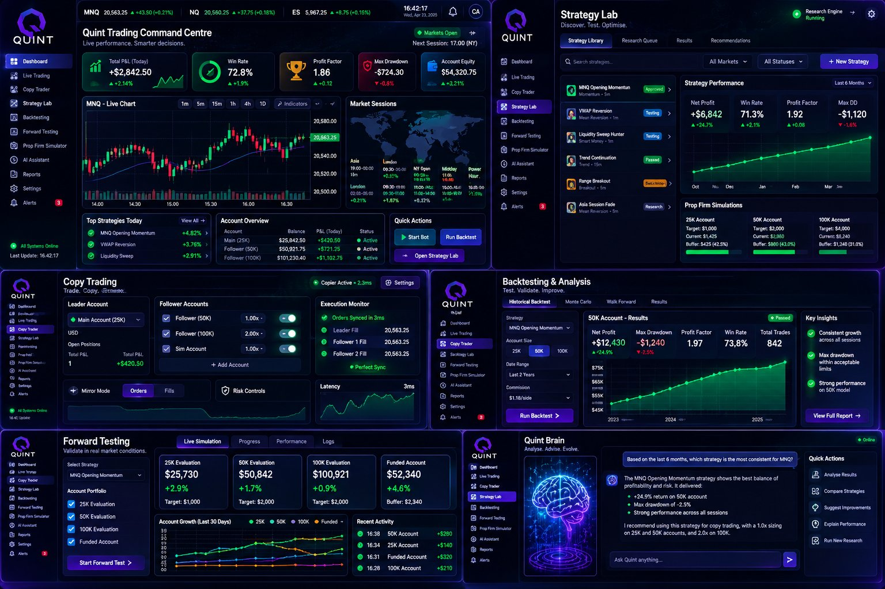
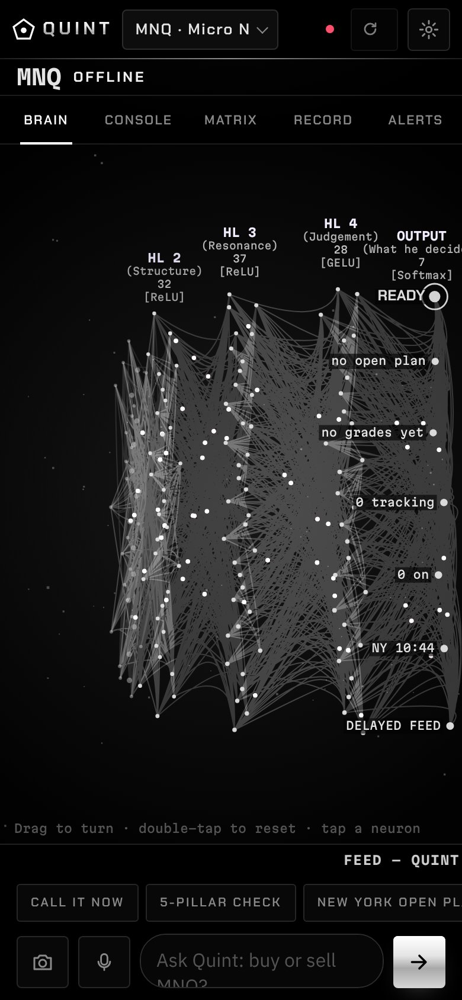
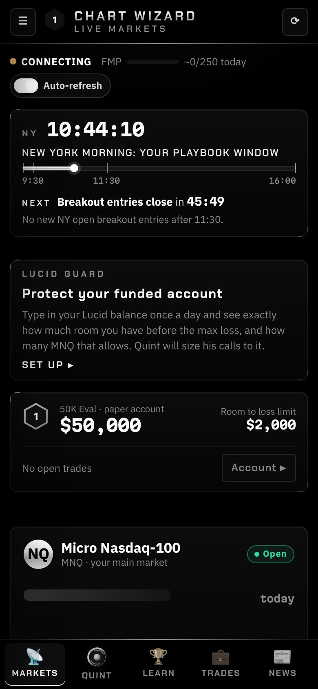

Trading research · Analysis · Automation
A family of apps for studying Micro Nasdaq futures (MNQ): learning to read charts, getting a live market read from an AI coach, and building toward a safety-first automated trading engine.
Quint Control · in design
The planned trading platform for NinjaTrader 8: bots, a strategy lab, backtesting, forward testing, a prop-firm simulator, copy trading and the Quint assistant, all on one dashboard that works on desktop and phone.

Design concept. Every figure shown is placeholder data, not real trading results.Quint Brain · working app
Quint's own app. A 3D neural-network visual shows how Quint is thinking, beside a live market read for MNQ.


Chart Wizard · working app
A chart-reading game and practice simulator with Quint built in as the coach.
How Quint is built
A strategy earns its place only by beating its costs in a backtest on real MNQ data, measured out of sample.
Every future automated order passes through one router and a guardian whose limits and kill switches can never be skipped.
No claims of profit without robust out-of-sample evidence. Failed experiments get logged, not hidden.